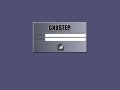

{kind=link}
{kind=link}
{kind=link}
{kind=link}

Latest release: 1.1.0
SLiM is a Desktop-independent graphical login manager for X11, derived from Login.app.
It aims to be light and simple, although completely configurable through themes and an option file; is suitable for machines on which remote login functionalities are not needed. Features included:
Here's some example of SLiM in action (hint: press F11 during login to take a screenshot of the application):
| SLiM - 'Red Leaves' | SLiM - 'Curvy' |
| SLiM - 'Lila' | SLiM - 'Old style (Login.app)' |
|  |
Note that some of the above themes has been adapted from a GDM theme and is copyright by the respective authors.
The Lila theme is not included in the current release of SLiM, since there's been some request lately, Here's a link to the Lila SLiM theme. Additional themes will be organized in a slim-themes package in the future releases.
So far SLiM has been tested only in Linux; better compatibility with other Unix-like systems such as FreeBSD is planned for the future. (contributions welcome!)
Unpack the archive, run
./configure make make install (as root)
By default the configuration file is /usr/etc/slim.conf; the options are self-explanatory.
Themes are located at /usr/share/slim/themes; to create or modify a theme be sure to have a look at the simple theme-howto included in the 'THEMES' file and also available online.
SLiM is developed by Simone Rota and Johannes Winkelmann,
and is released under the therms of the GNU General Public License,
verson 2.
The program is based on Login.app by Per Lidén.
Get the latest release at the BerliOS Developer pages
kindly hosted by